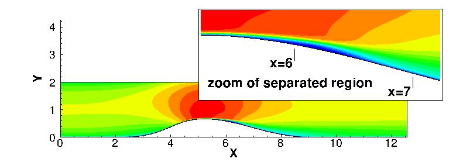

Public Access (formerly Langley Research Center)Turbulence Modeling Resource |
DNS: 2-D Converging-Diverging Channel, Re=12600
Return to: Data from DNS - Intro Page
Return to: Turbulence Modeling Resource Home PageThe data on this page were provided by J.-P. Laval.
Compare this DNS data with LES data for the same configuration
(at different Reynolds number):
LES: 2-D Converging-Diverging Channel, Re=20580.
This DNS case is for 2-D separating flow over a converging-diverging channel
with Retau of approximately 600, Re=12600 (based on inlet conditions).
The DNS was run using an incompressible code, and has been documented in several publications:
This is a subset of the data available from the
LML Database, Case DB3b (web link no longer available).

Some relevant information is given here, but the
interested reader is referred to the above publications (or LML website) for complete details:
Long-time averaged DNS data are provided below.
These results are from a grid with approximately 511 million grid points, covering a spanwise extent of Pi (3.14159...) with 576 cells in the
spanwise direction. Note that the files with field results on one plane of the full grid (385 x 2304) are very large, so
for convenience the field results are also given in files containing only every other point (193 x 1152).
Additional details about the DNS grid and methodology can be found in the above
references.
Return to: Data from DNS - Intro Page
Page Curators: Christopher Rumsey,
Ethan Vogel,
Clark Pederson
Last Updated: 11/05/2021